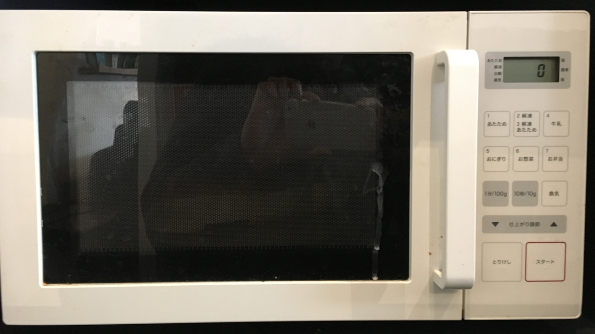
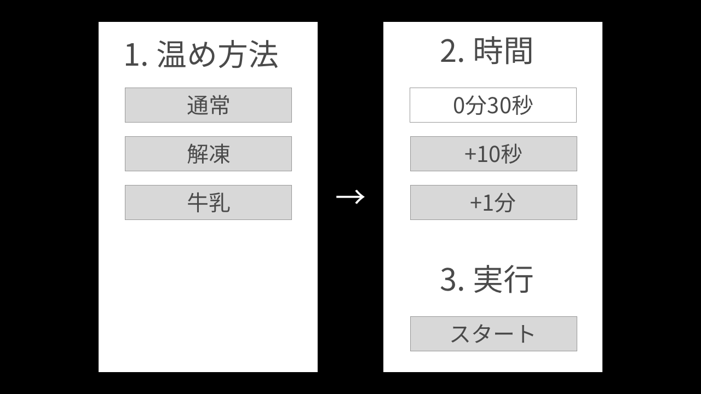
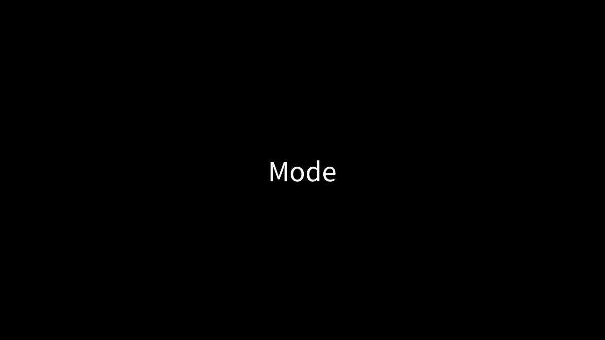
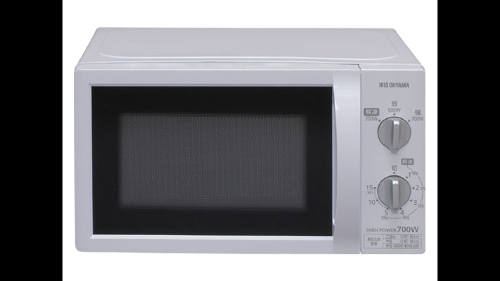

-

- 僕がこの発表でしゃべるのは3回目なんですが、1回目と2回目はアクセシビリティの話をして、今日はUIデザインの話をするつもりです
- 普段みなさんはこの場ではあまり仕事と具体的な関わりがある話をされてないと思うんですが、僕はあえて意識的にそういった話をしてます
- というのは、普段はそういった話をする機会があまりに少ないなと感じてるからです
- もちろん、一見関係のなさそうな話を聞いて違う視点からの気づきを得られることもあるはずです
- ですがそれはそれとして、常々やってるデザインとか、開発とか、プロジェクト進行とか、まさに目の前の仕事に直結する内容の話をもっと共有していくべきだと思い悩んでもいます
- 例えば、何かしらのプロジェクトの進行中には、そのメンバー同士でプロジェクトの方向性から仕様の細かい部分まで話す機会は頻繁にあると思います
- ですが、その場においての決定の背景にある根本的な思想とか文脈まで共有することはなかなかできません
- すると結果的にはお互いに、やり取りした内容の表面的な部分しか汲み取れなくて、
- 成果物の全体的な整合性が取れなくなったり、提案の意味が理解されずに通らなかったりするというようなことは経験があるはずです
- これは僕の経験をベースにした話なんですが、たぶん僕だけが感じてる課題ではないと思ってます
- ある人にとっては当たり前の知識を、自分も同じように知っているだけで、これまでうまくいかなかったことが簡単にできるようになったり
- 自分の失敗を共有することで別の人はそれを繰り返さなくても済むようになるかもしれません
- 知識を共有するだけですべてがうまくはいきませんが、何はともあれまずやってみないとダメだなというところで
- 毎回こういった発表をさせていただいてますという話でした
- できれば、ここで聞いた話をこの場限りで終わらせずに、普段の仕事の中でも意識していただければと思います
- ---
- さて、ということで今回は「ユーザー自身の道具になるためのインターフェイス」というテーマで話します
- ユーザー自身の道具とはどういうことなのかというと、大抵の道具というのはまずユーザー自身が主体的に利用できるようになっているべきだと思います
- 対して現状としては、提供側がユーザーの行動を主導するという意識が強く出てしまっているデザインが世の中の至るところに蔓延しているように感じます
-

- これはこの後ろにある電子レンジです
- 僕はよくこの電子レンジをよく使うんですが、最初のころは毎回操作に迷ってスムーズに使えないということがよくありました
- 物を入れてボタンを押すだけだと思われるかもしれないんですが、実はこの電子レンジはユーザーにとってかなり不自然な操作を要求してきます
-

- まずはこのボタンが集まってる部分を見てください
- 上の方に「あたため」「解凍」「牛乳」「おにぎり」などといったボタンがあって、その下に「1分/100g」「10秒/10g」「換気」「仕上がり調整」、そして一番下に「とりけし」「スタート」というボタンがあります
- 僕がこれを初めて使ってみたときの行動としては、買ってきたパンをとりあえず温められればいいと思って、レンジの中にパンを入れて最初に目に入った「スタート」ボタンを押しました
- ですが、電子レンジは回り始めず、特に音が鳴ったりもしませんでした
- 何の反応もなかったので電気が通っていないのかと思ったんですが、ディスプレイに文字が表示されているのでそういうことではなさそうでした
- よく考えると、電子レンジを回すときには時間を指定しないといけないなと気づいたので、次に「10秒/10g」というボタンを押してみました
- それでもやっぱり反応がありません
- もしかしたら壊れているのかもしれないと思ったんですが、僕の前に使っている人がいたので操作方法が間違っているのだろうということはわかりました
- そこでもう少しよく観察してみると、ボタンの並び順に沿って上から順に項目を選択していく必要があるのだと気づきました
-

- まず初めに温め方法を選択して、次に時間を指定してから、スタートボタンを押すという順番に沿って操作することが必須なようでした
- これはGUIでいうとウィザード的な操作です
-

- 画面が2画面に分かれていて、最初の画面で温め方法を選択すると次の画面に遷移する
- 時間を指定してからスタートを押すことで温めが開始される、という感じです
- この電子レンジがこのようなGUIの画面であれば一応使えはするはずです
- なぜかというと少なくとも操作に順番があるということは強制的に意識させられるからです
- ウィザード的な画面になっていれば、温め方法より先に時間を指定したりスタートボタンを押すことはあり得ません
- ですがこれが良いUIであるとは思えません
- というのは、そもそもユーザーにとってはシステムの都合に合わせた順番で操作をする意味がないからです
-

- 出典: IMB-T174-5（50Hz）・IMB-T174-6（60Hz）電子レンジ 17L ターンテーブル｜調理家電｜アイリスオーヤマ
- 良いUIとは、例えばこのようになっているべきです
- 先ほどの電子レンジに大量のボタンがついていたのに対して、この電子レンジにはアナログなぜんまいネジがふたつついているだけです
- たぶんこの場にいる全員が、この電子レンジの使い方なら予測できるでしょうし、仮にわからなくてもすぐに学習できるはずです
- レンジに温めたいものを入れて下のネジを回すだけです
- ほとんどの場合は上のネジには触れる必要もありません
- では、どうして先ほどの電子レンジの使い方はわかりにくくて、この電子レンジの使い方はわかりやすいのかというと
- これにはUIデザインの用語でいうところの「モード」という概念が関係しています
-

- モードというのはシステムが特定の機能の使用に制限された状態を指します
- 例えば前者の電子レンジは、最初は温め方法だけを選択するモードに入っています
- このモードに入っている間は、温め秒数を指定したり温めをスタートすることができません
- UIからはこうしたモードが取り除かれているほど、ユーザーにとって予測しやすく、学習しやすく、創造的に使えるようになります
- 逆にこのモードが存在することで、間違いや混乱、不必要な制限や複雑さを生み出してしまいます
- モードという状態を言い換えると、UIの状態によってユーザーの操作の意味が変わってしまうということとも言えます
-

- この電子レンジでは温め方法を選択すると、時間を指定するモードに段階が移ります
- すると、最初は時間を入力するボタンが押せませんでしたが、この段階では入力できるようになります
- ユーザーがこの電子レンジを使えるようになるためには、まずシステムにこうしたモードが存在することを知った上で
- 今はどのモードに入っているのか、モードによって異なる振る舞いは何か、逆に共通した振る舞いは何か
- ということを実験する必要があります
- そして、モードがある限りユーザーはモードを意識し続けなければうまく操作できません
- モードによって振る舞いに一貫性がなくなることによって、このようにユーザーの予測や学習が難しくなり、認知的な負荷が高まり、操作にストレスを感じたり操作を断念してしまうことに繋がります
- よくUIが考えずに使えるかどうかみたいに言われているのはこういう話です
- こうした理由から、UIデザインの原則としてモードは極力排除すべきです
-

- こうしたモードが存在することをモーダルであると言い、モードが存在しないことをモードレスであると言います
- 前者の電子レンジの操作がわかりにくいのがモーダルだからであって、後者の電子レンジがわかりやすいのはモードレスだからです
- モードレスという原理を説明するために、ここで後者のモードレスな電子レンジについて詳しく見てみます
-

- この電子レンジにはわかりやすさのポイントが2つあって、
- 両方のぜんまいネジをいつでも回すことができて、電子レンジの状態が常にぜんまいネジと同期されていることと
- 電子レンジの状態が常に明確にフィードバックされていることです
- ---
- 操作の流れに沿った説明
- モーダルとの対比としては。。。
-

- まあわかってから見てみるとそんなもんかという感じなんですが、
- ユーザーをタスクで支配している
- いつどのように、でなく、なにを、に注目する
- デジタルよりアナログな道具の方が使いやすいと言われる所以
- モードレスにするためには、ユーザーが特定のタスクに縛られずに出来るだけ自由に使えるように作ること
- オーケストレーション、フロー状態、自己帰属感
- 没入
- 僕たち制作者がユーザーが夢中になるようなものを作りたいというとき、よく没入感を演出したいというようなキーワードが出ます
- 没入感とはモーダルな体験です
- 制作側からの不自然な行動の束縛です
- 夢中になるものはこちらからユーザーに何かを強いるのでなく、ユーザーのフロー状態を作り出すことによって実現するべきだと思います
スライドの終端